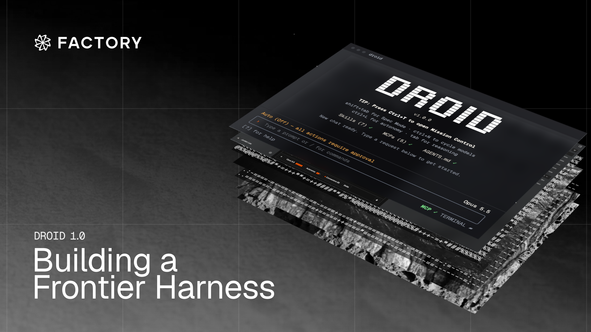

过去一年，我们与全球多家大型企业的几十万开发者合作，逐步完善 agent harness。企业开发对它有具体要求：能完成复杂任务，合理使用资源，并提供明确的安全控制。
今天推出 Droid 1.0：比以前更准、更省、更快，靠新的设计原则，外加一套程序化调工具的引擎。
Droid 是我们的 agent harness。Harness 是模型外面的一切：提示、工具、工具结果怎么回来、把这些跑起来的循环。Agent 现在会跨几百轮干上几小时甚至几天，每一轮都要把说明、工具和历史再发一遍。
这次对 Droid 的更新是到目前最大的一次。同一批任务上，Droid 比给这些模型做的原生 harness 最多再省 20%。它也按接下来会发生的事来设计：当前沿模型能把整段工作流当成代码来规划时，Droid 让它们在一次模型请求里跑上几百次工具调用。
Factory 按设计不绑某一家模型。我们觉得最好的 agent harness 是给每个模型做的，用户可以选市面上最好的模型，也可以让 Droid 用自动模型路由器 Factory Router 选最省的组合。
给许多模型一起优化 harness，harness 会更好。只对着一个模型调，很难把进展和迁就那个模型的怪癖分开。跨模型做，最强的改进才会泛化，撑过当初启发它的那个模型。
内部 Agent Factory 负责这项工作。Agent 分析基准测试中的失败和真实会话中的问题，提出改动，并在各个模型家族上验证。工程师审查证据，再决定哪些改动发布。
结果是一套对企业能用、对着每个前沿模型调过的最省编码 agent，开源权重和闭源权重都算。
下文写头对头结果、harness 背后的设计原则、内部 Agent Factory 怎么建，以及带动最大影响的那几处改动。
1同一任务上更便宜
同一批任务、同一批模型上，Droid 比我们测过的其他 harness 分数更高、成本更低。
原文图 1 是 Terminal-Bench 4 上的交互散点：GPT-6.1 Sol 和 Claude Opus 5.5 两块，纵轴通过率、横轴成本。Cursor 在 OpenAI 模型那块不画，因为它接不到 OpenAI 模型。交互图请到原文点。
Terminal-Bench 4。GPT-6.1 Sol 上，Droid 比 Codex 高 3.5 个点，成本低 12%；比 OpenCode 和 Devin 高 6.6 到 12.6 个点。Claude Opus 5.5 上，Droid 比 Cursor、OpenCode、Devin 和 Claude Code 高 3.0 到 7.6 个点，成本最多低 24%。方法
Agent 跑得越长，这个差距越要紧。几百步下来，更好的 agent 少犯后面步骤会叠上去的错；更便宜的，同一笔预算能多跑几个。Droid 给它支持的每个模型分别调提示、工具描述和调工具的模式，所以每个支持的模型都拿到这些增益，包括你自带 API key 的时候。
这些结果背后最大的改动，是让模型从一段程序里调工具。
2程序化调工具
标准 agent 循环里，模型直接调工具，每次工具输出都接到上下文后面。程序化调工具（PTC）对长程工作换了一条路：agent 写一段会去调这些工具的程序。
有了 PTC，agent 可以先想清楚，把一段调工具的工作流写成代码，再在一次调用里从头到尾执行整段程序。比如写一段工作流去读几百个文件、找出提到某个主题的那几个；分拣几十张 Linear 工单；或者按确定性流程把一次棘手的数据库迁移拆开跑。
CodeAct（Wang 等，2024）表明，用代码行动，在 17 个模型上胜过 JSON 和文本工具调用。Cloudflare 和 Anthropic 在 2025 年底把这个想法带到生产，Codex 今年把它带到编码 agent。
我们在 Droid 1.0 里把 PTC 设成默认，有三个原因。第一，它让 agent 的上下文窗口干净，因为它收到的只是程序的输出。普通工具输出（生文件、搜索结果、日志）留在程序里当变量。第二，它减少模型请求次数，因为一段程序跑许多次调用，复杂任务更快、更便宜。第三，它让 agent 更稳：检查和循环在代码里确定性跑，消掉模型偷懒、把本来计划过的分支丢掉的可能。
Script 模式
Droid 把 PTC 做成一个 Script 工具。模型写 JavaScript，跑在沙盒里，自己没有文件、网络或系统访问。
一次 Script 可以在一次模型请求里做几百次工具调用，所以说明和历史发一次，而不是每几调用再发一遍。打印输出有大小上限，完整结果记在模型稍后能搜到的地方。互不依赖的调用并发跑，一批耗时等于最慢的那一次。
这些调用是代码，所以一次结果可以影响下一次调用。比如一段程序可以搜索、读每一个匹配、再在同一遍里过滤结果。直接调用的话，每一步都要一次模型请求。
和直接调工具比，Script 模式在 Claude Opus 5.5 上把 Droid 的成本砍了 15%。多数 Script 很小，按任务省下来的部分集中在那 12.5% 做了六次或更多工具调用的 Script 上。
那条尾巴上的两段 Script，取自我们自己的会话（简化过，名字和标识改过），把效果摊开。每一段，Script 和直接调用做同一批工具调用。差别是它们花多少次模型请求：直接调用每次请求塞进几次、步骤之间等模型；Script 把它们全放进一段程序。直接调用的数字是估计，假定每次请求 3 到 10 次调用。
Linear 清理在队列之间挪了 151 张 issue，每次挪都核过，一共 312 次工具调用。直接调用时，每次请求都把说明和越来越长的历史再发一遍，即便每次请求 10 次调用，这个任务也要 36 次请求、读大约 310 万输入 token。Script 用了 2 次请求、大约 61,000 token：一次写程序，一次读它打印出来的东西。
CI 扫过展示省下来的另一半：模型读到什么。这段 Script 查了 547 次运行里的 5,384 个桌面任务，550 次工具调用，一次 60 个，用 2 次请求，而不是估计的 59 到 187 次。模型只看到一个五数字摘要，包括 41 个失败任务。不到 0.1% 的工具结果进到它的上下文。这次扫在后台跑了大约 8 分钟，模型同时在干另一件事。
| Linear 清理 | CI 扫过 | |
|---|---|---|
| 工具调用 | 312 | 550 |
| 直接调用（估计） | 36 次请求，约 310 万输入 token | 59 到 187 次请求 |
| 一段 Script | 2 次请求，约 61,000 token | 2 次请求；模型只看到五数字摘要 |
原文图 2、图 3 是 Script 对直接调用的交互示意。请到原文点。
它怎样改善质量
- 更干净的上下文。生文件、搜索结果、日志留在程序里，模型对着更少噪声推理。
- 循环和工作流确定性跑。Linear 清理在每次写入前后比 15 个字段，保持精确计数，并且写成：第一张在任何其他方面变了的 issue 上就停。
- 规划发生在前面。模型在推理里把整段序列想清楚，它写下的程序就是计划。更强的模型往前规划得更远，所以它们的 Script 更复杂，一次请求里做的更多。
前沿模型已经从程序化调工具里拿到最多，我们预期这个增益会随前沿一起长。
Script 模式默认开在 GPT-6.1 Sol、GPT-6.1 Terra、GPT-6 Astra、GPT-6 Sol、GPT-5.6 Sol、Claude Fable 5.1、Claude Fable 5、Claude Opus 5.5、Claude Opus 5 和 Kimi K3 上。
设计取舍
程序化调工具加进去简单，做错也容易。这些是最要紧的取舍。
| 取舍 | 怎么做 | 为什么要紧 |
|---|---|---|
| 程序拿到真数据 | 整份文件，以及结构化、带类型的搜索结果。 | 过滤和计数在代码里发生，不花 token。 |
| 字面文本原样走 | 文件内容、补丁、命令走原始输入块，不走转义字符串。 | 更少 token，更少畸形调用。 |
| 编辑回来很短 | 程序里的一次编辑，返回和直接编辑一样的短摘要。 | 文件不会再贴回上下文。 |
| 长任务不堵住 | 程序最多等 5 分钟，然后把目前的输出交回来。也可以在后台启动，立刻返回。 | 模型继续干活。 |
| 不轮询 | 一个专用工具去查、等、或停一段正在跑的程序。后台活干完时 Droid 把模型叫醒。 | 没有请求花在问活干完没有。 |
3Agent Factory
Script 模式，以及每个模型要不要用它，都来自产出 Droid 大多数改动的同一套循环。新模型和快照隔几周就到。没有哪个团队能靠给每个模型手调 harness 跟上。
循环从模型第一次能碰到开始，常常是早期访问快照。一套跟踪 20 多个模型的自动化把它加进 Droid，对着我们的行为断言检查。过这些断言是最低线，不是发布的门槛。从那以后，每个可用模型都通过产品本身来评：在活环境里、经过 QA、以及每天的基准跑。现场错误日志和用户碰到的摩擦加进每个模型的结果，所以审它们的 agent 同时看见基准失败和真实会话。
单次失败说明不了什么，所以 agent 找跨任务、跨模型重复出现的原因。它把每条发现变成一条写明假设的改动提案，一次受控实验在它碰到的每个模型上量这条改动。
因为这些改动大多是 agent 写的，提出改动的 agent 和审它的工程师需要对「好改动长什么样」有同一套想法。每一轮都把整份请求再发一遍，所以一条放错位置的说明、一份过时的工具输出，伤的不只一次。它在那之后的每一轮都分心模型，花掉质量、token 和时间。每条提案都按同一套原则来卡：
- 给每个 token 做预算，大的工具结果放文件里。
- 靠一直维护提示缓存来让请求变长。
- 给通往推理的热路径做剖析，能缓存的都缓存。
- 跟踪后台工作，比如长命令和子代理，干完时把模型叫醒。
- agent 卡住时，永远备好下一步：推一把、重试、摘要、或停。
Droid 提出的改动取决于它朝哪些目标干活。多出来的一条要求是：每个目标必须在每个模型家族上站住。我们在 GPT-6.1 Sol、Claude Opus 5.5、GLM 5.3 和 Kimi K3 上调 Script 模式时，目标之一是：同时给 Script 和直接工具时，模型应当选 Script。循环产出了对提示、Script 里调用的工具描述、以及 Script 结果结构的改动。没有哪一条单独挪动每个模型，三条合在一起在所有模型上达到了目标。
另一个目标是 Script 模式在每个家族上都比直接调用便宜。给读到的每个文件每一行编号，拦住了 Sol 为了拿行号再通过 shell 重读文件，并在一个任务上把 Opus 的成本砍了 22%。它也给每次读取大约加了每行两个 token，在 GLM 上把成本抬了 8%，在 Kimi 上抬了 32%——这两个模型没什么可省。最终它成为可选功能，由模型在需要时请求行号。
工程师最终审查每项提案的证据，按这些原则决定是否发布。结果是一套跟得上模型提供方节奏的 harness。
4程序化调工具之外
程序化调工具是这套循环产出的最大改动，但不是唯一的。其余更小，铺在 harness 各处：每次请求提供方能复用多少、每次请求里有什么、一轮走歪时循环怎样恢复、以及每次请求多快发出去。
提高提示缓存命中率
提供方按前缀缓存请求，所以任何改动都会让它后面的全部失效。Droid 的请求本来就已经只追加，只有一个例外：工具发现。工具定义靠近请求顶部，所以会话中途加载一个 MCP 或连接器工具，意味着整段对话要再处理一遍。Droid 现在把新发现的工具追加到请求末尾，缓存前缀不动。
| 会话中的改动 | 下一次请求从缓存读 |
|---|---|
| Git 状态变了（测试中 · 19,976 token 复用，176 新） | 99.1% |
| 会话回滚（测试中） | 99.8% |
| 第二个同类型子代理（测试中） | 96.5% |
| 加载了新工具（前后对照，Azure · 全部 26,400 token 复用） | 100% |
原文图 5 是「新工具插进工具列表」对「追加到末尾」的示意：以前大约 73,500 token 重新处理、28,000 从缓存复用；Droid 1.0 大约 1,500 新处理、100,000 从缓存复用。
生产里，典型请求 98% 的输入从缓存读，98.6% 的请求严格只追加。一套监视靠把每次请求和前一次比、点出任何打破缓存的部分，把这件事稳住。这些打破很贵：请求前头一个改过的 token 就会逼一次完整再处理。它们也是 Agent Factory 的理想活，已经送出好几处提示缓存修复。Git 状态变了之后，下一次请求现在只加 176 个新 token。一次回滚复用 99.8% 的缓存，第二个同类型子代理复用 96.5%。错误也不重置缓存，因为 Droid 在已经握着它的提供方上重试失败的请求。
基础提示缩短 37%
第一次请求带着说明、工具定义和启动上下文，之后每一轮都跟着走，所以是 harness 里我们砍得最狠的部分。从 Droid 0.170.0 到 0.250.0，它从 20,887 个输入 token 缩到 13,055（少 37%）。
省下来的大部分来自工具。Droid 以前一开始送 11 个工具定义。现在送 2 个，很少用的工具模型需要时再按需加载。工具定义少了 45%，Droid 在启动时加的提醒少了三分之一。系统提示往另一边走，长了 31%，尽管旧提示里的大多数规则被写短了。长出来的部分来自两块新指导：agent 怎样跟用户说话，以及它怎样处理环境细节，比如图像、接上的应用、个人数据。
很多改写是模型自己做的。一套自动化常常把 Droid 的说明交给一个模型，让它找重复、矛盾或不清楚的指导。每条发现变成一条拟议编辑，像其他改动一样测。
有界自主
agent 自己跑得越长，卡住、重复干活、或把任务整个丢掉的路就越多。Droid 检测每一类，每一种都落到一个定好的下一步：推一把、重试、或停。规则住在循环里，不住在模型里，所以对 Droid 支持的每个提供方都成立，新模型第一天就有。
卡住通常出现在流里。Factory 托管的 Anthropic 流上，4 分钟沉默算作掉流，会重试。碰到硬时间上限的回答最多试两次；中途断掉的回答在重试前拿掉，所以模型只叠在完整答案上。
重复干活靠计数抓住。连续三轮没有可见输出，Droid 停。三次一模一样的工具调用推一把，六次停循环。返回新结果的重复，比如轮询一次构建，可以继续。
丢掉任务最常发生在长对话被摘要的时候。这些压缩摘要现在有 16,000 token 的空间，从 8,000 抬上来，因为按我们估计，三分之一或更多以前在填满旧上限。
可不是每次长等都是失败。模型启动一段会花一阵的活，比如子代理或长命令时，它可以把这段活挪到后台再睡。活干完时 Droid 用一条提醒把它叫醒。
给热路径做剖析
请求缓存过、裁过之后，模型的响应时间多半不在我们手里。我们多快把请求送到它那里，在。
Droid 以前每一轮都重建已连接应用的列表，预飞工具查找随会话历史变长而变慢。
第一轮开销最大。登录检查重复干活，而且一个接一个跑。启动请求等 Droid 的全部代码加载完，第一次模型请求等每个 MCP 服务器安顿好。自带 Amazon Bedrock 凭证的用户还要再等这些凭证加载。
最近一次更新里，这些等待要么没了，要么挪开了。Droid 复用已连接应用列表，直到连接变化，把一轮准备砍到 24 毫秒。受控测试里，仅这一处改动就让中位响应早结束 13%。Droid 现在只读会话历史最新的那一段，所以预飞工具查找大约一毫秒。登录检查并行跑、不重复，中位从 101 毫秒降到 59 毫秒。droid exec 在代码还在加载时就把身份、功能开关、组织策略和连接器请求一起发出去，把到第一次模型请求的中位时间从 1,741 毫秒砍到 646 毫秒。MCP 服务器跟着第一轮一起启动，一个要 3 秒才初始化完的服务器不再拖住它，Bedrock 凭证在第一次请求前就就绪。用户机器之外，推理代理上的一处路由修复给每次模型调用削了 150 毫秒。
结果在一次真实的生产 agent 轮次里看得见。Droid 从按 Enter 到把请求发出去花了 124 毫秒：97 毫秒收集上下文，27 毫秒把它拼起来。也就是说，用户等到第一个 token 的等待里，97% 是模型请求。
5启动也更快
agent 循环之外，Droid 1.0 把用户在应用里碰到的延迟也砍了：打开它、开一次会话、一次跑几个、退出。
打开是每次会话的第一段等待。8 月 25 日到 10 月 20 日两次发布之间，到第一帧的中位时间从 1,839 毫秒落到 488 毫秒，到 Droid 接受提示从 1,876 毫秒落到 618 毫秒，大约各砍 70%。大部分来自第一帧之前少做活。Droid 现在发预编译代码，大约 6,000 个模块不再在启动时解析。按键在启动还没完时就登记，CI 会让任何把首次按键 p95 推过 250 毫秒的改动失败。升到 Bun 1.4.2 把 Linux、macOS 和 Windows 上的 p95 启动时间砍了 13–22%；Windows 上 Droid 现在还跳过控制台准备、缓存系统证书列表。
远程电脑上的会话跑在守护进程里，所以守护进程没就绪就不能开。守护进程以前要等登录 shell、证书、语言环境和技能先加载。现在这些都刚好及时加载。从启动到就绪的中位时间，在一名开发者的 Mac 上从 1,956 毫秒落到 392 毫秒；空 shell 配置时从 887 毫秒落到 376 毫秒。
最深的改动是架构上的。以前一次跑几个会话意味着跑几个进程，每个大约用 350 MB 内存，五个并行子代理加主会话超过 2 GB。它们现在共享守护进程，每个会话大约加 20 MB，/new 是立刻的。
退出是最后一段等待，以前还取决于网络。Droid 现在把还欠着的遥测和会话同步交给一个拆出去的进程，自己退出。生产里退出中位时间从 648 毫秒落到 30 毫秒。
6用时
省 token 的改动也能省时间：Script 模式请求更少，留下来的每一次更小、大多从缓存读。Claude Opus 5.5 上，Droid 每个通过任务比 Claude Code 少花 26% 时间，少用 17% token。GPT-6.1 Sol 上，它比 Codex 少用 12% token，多用 10% 时间。
Terminal-Bench 4。Opus 5.5 上，Droid 每个通过任务比其他每个 harness 少花 16% 到 26% 时间。GPT-6.1 Sol 上，它比 Codex 多花 10% 时间、成本低 12%，比 OpenCode 和 Devin 少花 4% 到 11% 时间。方法
这些时间只覆盖任务本身。任务周围，Droid 打开、开会话、退出所花的时间是 8 月的一个零头，所以开一次新会话或在几个之间切换几乎不花钱。
Droid 1.0 今天就能用。下载桌面应用（macOS 和 Windows），或装终端界面。
要在同一套 harness 上往上做，用 Droid SDK（@factory/droid-sdk）。它跑的是和 CLI 同一份 Droid，所以这篇里的每处改动都跟着它走。从 Node，一个应用可以启动 Droid、握住多轮会话、流式看它干活、并通过 MCP 给它自定义工具。从另一个进程或本地浏览器工具，它可以连到正在跑的 Droid 守护进程，在那里管会话。
7方法
头对头。
- 版本：
codex@0.163.0，claude-code@2.1.306，cursor-cli@2026.10.19-6bbf2c4，devin@3000.11.92，opencode@2.1.2。 - 模型：Claude Opus 5.5（高推理）和 GPT-6.1 Sol（高推理）。
- 选高推理，是因为它在他们平台上最常用，最能代表交给 Droid 的工作负载。
- 基准：Terminal-Bench 4，全部任务，默认时限，2026 年 10 月 23 到 28 日跑。
- 每个 harness 每个任务跑三次。
- 因 harness 以外的原因失败的试次重跑：评测没启动、模型请求超时、或提供方没容量。
- Anthropic 的内容审核在 Claude Opus 5.5 上拦住了一些任务。每个碰到这件事的 harness，那些试次在 Claude Opus 5 上重跑，直到没有内容审核错误。GPT 模型没有这类拦住。
- Devin 没法关掉向用户提问的工具，所以在一些用 GPT-6.1 Sol 的任务上它停下来问，而不是做完。为了对照公平，Devin 停下来问的任务，如果 Codex 过了，就算 Devin 过（平均每次试验 4.7 个任务）。这只影响准确率，不影响成本或时间。
- Cursor 在任务中途重连时会少计 token，发生这件事的两次试验里，他们从转写估计缺的用量。
- 成本和时间按每个通过任务算，用各提供方标价。图上成本从左最贵到右最便宜。
- Droid 一次和一个 harness 比，同一模型。
- 只计两个 harness 三次都过的任务，所以两边量的是同一份活。
- 成本按用掉的 token、标价。
- 时间是 agent 干活花的时间，不含准备或判分。
其余。
- 这里写的每处改动都跑在生产 Droid 里。
- 生产数字来自 Droid 自己的遥测，排除 CI：提示复用、每周最新发布的启动中位、退出时间、以及第一轮轨迹。
- 提示复用按请求量：从提供方缓存读的输入 token 份额，截至 10 月 22 日这 7 天里 2,040 万次生产 Droid CLI 请求，排除 CI 和评测。按 token 而不是按请求加权，份额是 91.5%。只追加是提示缓存监视没标出来的请求份额。
- 一些和启动时间相关的指标来自受控测试，在同一批任务和机器上比改动前后的构建。
- 建模数字是 Script 例子里直接调用那一侧：低端每次请求 10 次调用，高端 3 次，每次请求大约 28,000 token 的固定说明。
8出处
这篇是译文。原文 Factory Research，Droid 1.0: Building a Frontier Harness，Factory，2026 年 10 月。引用写法：Factory Research. "Droid 1.0: Building a Frontier Harness." Factory, October 2026. factory.ai/news/frontier-harness
Terminal-Bench 4 上的点数差、成本差、Script 的 15%、Linear 312 次调用 / 2 次请求、CI 5,384 个任务、基础提示 20,887 到 13,055、缓存 98%、第一帧 1,839 到 488 毫秒，都按原文转述。头对头只计两边三次都过的任务；Devin 停下来问的任务按 Codex 是否通过计。我没有复现 Terminal-Bench 4，也没有核过生产遥测的分母。原文图 1 到图 7 是页面里的交互件，译文用表和数字，交互请到原文点。